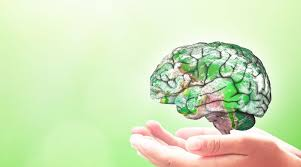
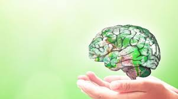

Sağlıklı Yaşam Bir Tercihtir.
Dünya Sağlık Örgütü (DSÖ) sağlığı; "Sadece hastalık ve sakatlığın olmayışı değil, bedensel, ruhsal ve sosyal yönden tam bir iyilik hâli" olarak tanımlar. Bu sunumda ders kitabımızın 47. ve 63. sayfaları arasındaki tüm temel kazanımları görsellerle desteklenmiş bir şekilde inceleyeceğiz.
10-12
Saatlik Gece Açlığı
1 ME
Dinlenme Enerjisi

Sağlıklı tabak modeli ile dengeli beslenme (Sunum Görseli 1)

Fiziksel Aktivite
Enerji dengesini sağlamak ve kas iskelet yapısını korumak için hareket şarttır.

Yaş Grupları
Her yaş dönemi farklı fiziksel ve zihinsel ihtiyaçları beraberinde getirir.

Zindelik
Egzersiz sadece vücudu değil, zihni de berraklaştırır ve disiplin katar.

 
